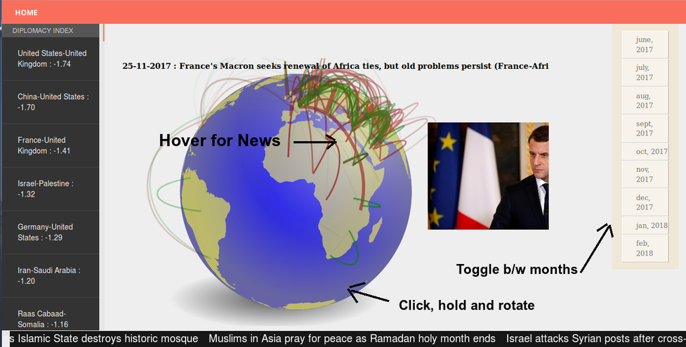

How to Use
The list on the left features a diplomacy index between country pairs which quantifies their relations, arranged least to greatest. Scroll down to find which countries are doing well!
The globe features flyers between two countries, each flyer corresponding to a single news article involving these two countries. If the news is detected as 'positive', the flyer is green and if 'negative', red. Hovering over the flyer shows the news headline.
Click and rotate the globe to find which country-pair has featured in a lot of news that month - and for good or bad.
Click on the Months tab on the right and watch the relations develop over time in front of your eyes.
The ticker on the bottom shows the "breaking news" of each month as analysed by our application